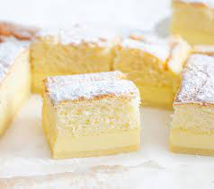

MAGIC CAKE
One simple batter turns into a 3 layered cake with a top layer of sponge, a middle layer of custard and a fudge-like base. It's like....magic! Adapted from Magic Cake by Jo Cooks.
Ingredients
- 4 eggs , yolks and whites separated (at room temperature)
- 3/4 cup (150g) sugar (ordinary or caster sugar)
- 1 tsp vanilla extract
- 1 stick (4oz / 125g / 1/2 cup) unsalted butter , melted
- 3/4 cup (4oz / 115g) plain all purpose flour
- 2 cups (500 ml / 1 pint) milk (lukewarm) (full fat or low fat but not zero fat)
Directions
- Preheat oven to 325F/160C (standard oven / fan forced or convection).
- Butter a 8" x 8" / 20cm x 20cm square cake tin (Note 4).
- Beat egg whites with a mixer until stiff peaks form. Set aside.
- Place the egg yolks and sugar in a bowl and beat until it turns pale yellow - about 1 minute.
- Add the vanilla extract and butter and beat until well incorporated - about 30 seconds to 1 minute.
- Add the flour and beat until just combined.
- Pour the milk in slowly while beating, and beat until well combined (or if using a hand held mixer, add 1/4 milk at a time, beating in between).
- Use a spatula to fold in the egg whites in the batter, one third at a time, until just incorporated. You don't want to knock the air out of the egg whites. Don't worry if there are a few egg white lumps in the batter. The batter should be very thin, almost like a thick pouring cream.
- Pour the batter into the prepared cake tin.
Baking Directions
- Bake until the top is golden brown and the cake does not "jiggle" when you gently shake the tin - around 40 to 50 minutes. Check the cake at 30 minutes - if the top is already golden brown but the cake is not yet set (i.e. it jiggles), cover loosely with foil and return to the oven, 10 minutes at a time, until set.
- Allow to cool in the tin for 10 minutes, then turn out onto a cooling rack.(Note 3) Cool completely before serving.
To Serve
- Cut into squares - I cut it into 12 in the photo, but 9 is more realistic serving size portions.
- Dust with icing sugar just before serving.
- Serve with a side of whipped cream and strawberries, if using.
Photos
- 